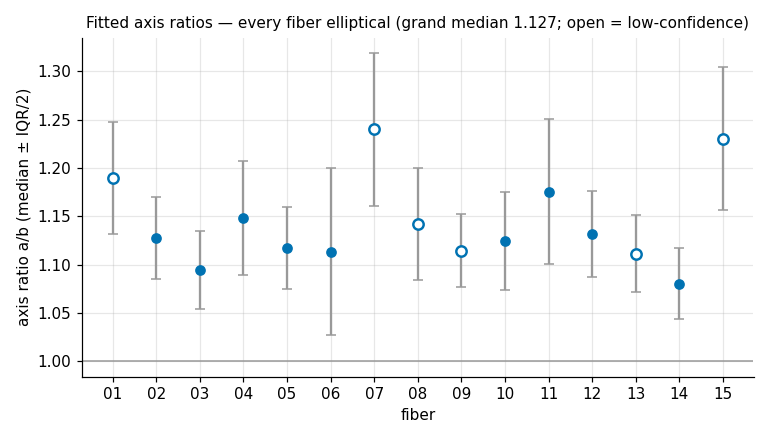
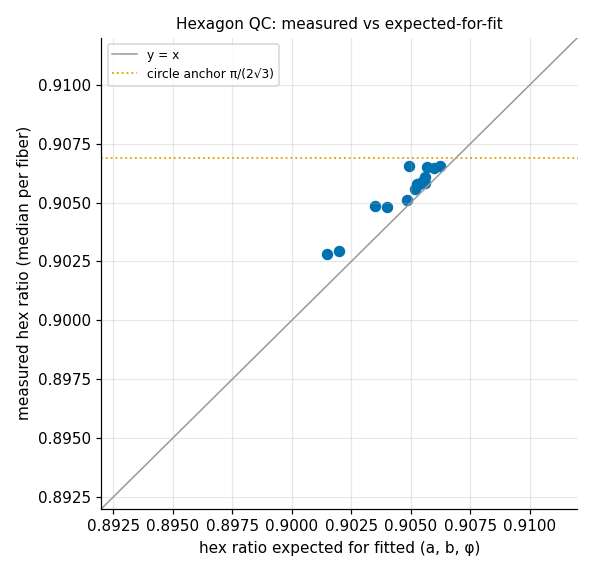
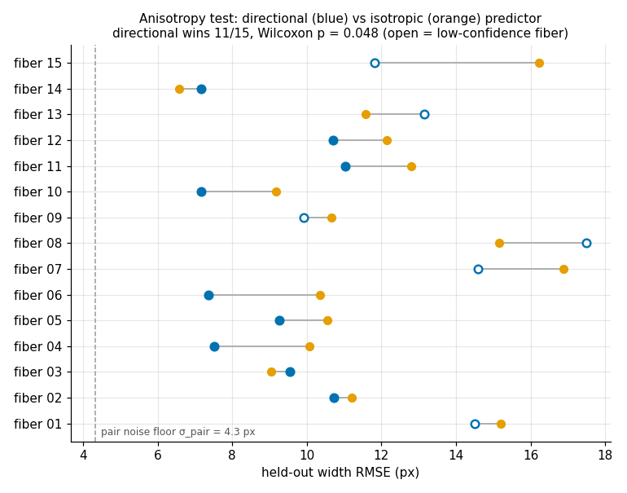
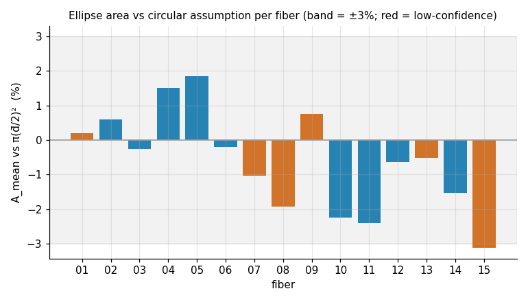
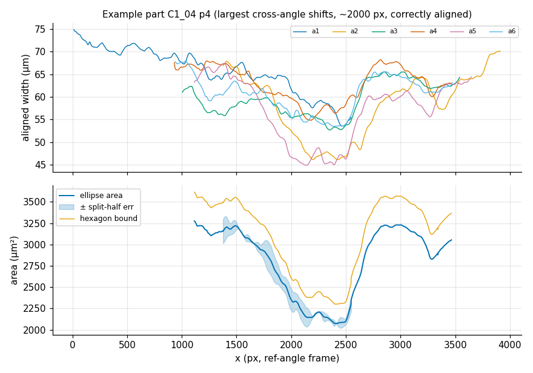
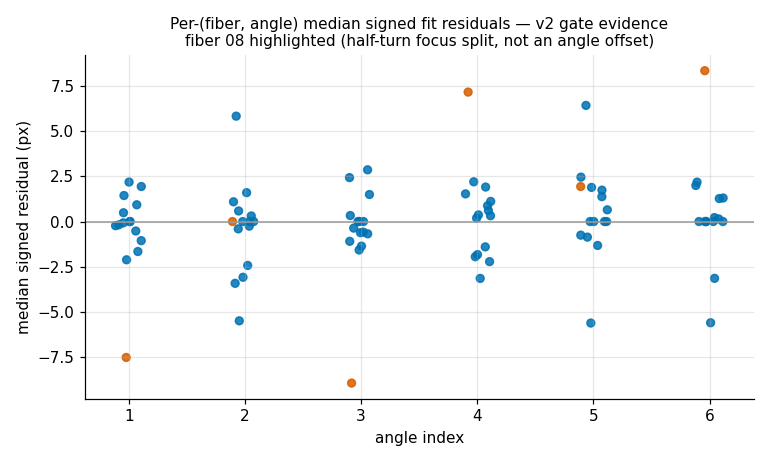

fibrecv · lab report · study 02
Multi-angle cross-section measurement (C1)
1Introduction
fibrecv feeds tensile.py a circular cross-section area
A = π(d/2)² from a single viewing direction. Young's modulus and toughness scale
with 1/A, so any error in the circular assumption propagates one-to-one into the
headline material properties. The C1 dataset images each of 15 fibers from six
rotation angles (5 positions per fiber, 2560×1920 TIFF + scale-bar twin + Zeiss XML
per shot), making the cross-section measurable instead of assumed. The planning phase
established that a4/a5/a6 are the 180° flips of a1/a2/a3 (3 independent projection
directions × 2 repeats); exactly-60° spacing is the working assumption pending
collaborator confirmation.
2Method
2.1 Per-image measurement
C1 fibers are bright on a dark background (no saturation contrast), so a
config-selected brightness feature mode was added: the z-map is built from
V = max(R,G,B) with the existing margin-row median/MAD normalisation; everything
downstream of the z-map (band, edges, QC, tilt) is unchanged. All 450 images measured
at default knobs (--feature-mode bright only): 0 errors, 0 low-confidence,
coverage ≥0.8 on 449/450, no degradation on the dimmest brightness quartile.
2.2 Scale
The Zeiss sidecars carry two conflicting µm/px candidates: camera pixel pitch
2.2 µm / 10× → 0.220, and Scaling/Items → 0.38892 (1.77× apart, 3.1× in
area). Burned-in 100 µm scale bars on three "s" twins measure 258.0 px
cap-centre-to-cap-centre → 0.3876 µm/px, adjudicating items (−0.34%; camera is
+76% off). This overturns the planning-time reading; the fibers are ~46–84 µm in
diameter, not 41–45 µm.
2.3 Cross-section fit
Per (fiber, position): the six per-angle width profiles are NaN-padded onto the
absolute x grid, aligned by bounded cross-correlation
(xsec_max_shift=2000 px — recalibrated on the full set after the review
showed the stage repositioning spans nearly the whole 2560 px frame (|lag|
p95 = 1741 px, visually verified); xsec_min_corr=0.2), and stacked. A
correlation peak sitting on the search boundary is flagged
saturated and never applied (zero shift + uncertain, like a weak link);
interior measurement dropouts stay NaN in the stack rather than being bridged by
interpolation; a part whose median fit residual exceeds
xsec_rms_flag_px=6 px marks its fiber low-confidence (this catches single
angle images whose widths sit 5–15 µm off the other five — verified visually).
Each aligned column is fitted in squared-width space — w²(θ) = c₀ + c₁·cos2θ + c₂·sin2θ, exactly linear, with a² = (c₀+R)/4 ≥ b² = (c₀−R)/4 — so near-circular columns degrade gracefully (φ→NaN) and impossible width triples (b²≤0) are invalidated, never clamped. QC: circumscribed-hexagon upper bound compared against the value expected for the fitted ellipse (the π/(2√3) anchor is exact for circles only); per-position uncertainty area_err = |A₁₂₃−A₄₅₆|/2 from the two half-turn exact fits.
2.4 Validation design
Literal leave-one-direction-out is rank-deficient (θ and θ+180° share a design row), and leave-one-repeat-out makes the "ellipse prediction" identically the 180° partner. The primary criterion is therefore the leak-free anisotropy test: predict wk by its 180° partner (directional) vs by the mean of the other five widths (isotropic); per-fiber pooled RMSE, paired Wilcoxon over 15 fibers, with the pair noise floor σ_pair = median|wk−wk+3|/√2 drawn against the circle RMSE only. Model form (ellipse specifically) is judged by hexagon consistency and a secondary φ-transfer test (φ fitted on odd columns; both repeats of one direction dropped at even columns; (c₀,R) re-solved with φ fixed — rank 2 only where the kept directions actually differ in cos 2(θ−φ̂), so near-bisector columns are skipped rather than solved degenerately).
3Results
3.1 Synthetic end-to-end proof (implementation)
Rendered bright-on-dark fibers (1200×500 px, six angles, injected shifts ±110 px, realistic noise) through the full pipeline:
| quantity | truth (δ-corrected) | recovered | pin |
|---|---|---|---|
| edge bias δ (circle control) | — | 3.90 px/side | −1..8 |
| circle axis ratio | 1.000 | 1.0009 | ≤1.03 |
| major axis a | 217.8 px | 217.8 px | — |
| minor axis b | 172.8 px | 172.9 px | — |
| orientation φ | 35.0° | 34.97° | ±4° |
| area | 29 557 px² | 29 586 px² (+0.10%) | ±3% |
| shifts | ±110 px injected | within 2.0 px | ±2.5 px |
| hex ratio vs expected-for-fit | equal | Δ ≤ 0.02 | ±0.02 |
An injected +2 px/side half-turn asymmetry is reported by area_err
within 6% of the analytic value. (Two plan pins were re-scoped and recorded in the
labbook: the shift pin 1.5→2.5 px — correlation edge-fill bias, width impact
~0.2 px; and the ×2-noise area_err scaling — unattainable because pipeline
smoothing leaves a systematic floor, replaced by the direct injected-asymmetry
test.)
3.2 Real data (15 fibers × 5 parts)
Shape: the sections are not circular. Every fiber's median fitted axis ratio lies between 1.08 and 1.24 (grand median 1.127). Fitted orientation φ is coherent along fibers: part-mean φ concentrates far above the uniform null in 5/15 fibers individually (Rayleigh p<0.05) and at Fisher combined p = 1.3×10⁻⁴ across the population — this cross-part test is immune to per-image focus artifacts, which re-randomise between parts. The hexagon QC agrees with the fitted ellipses almost exactly (median measured hex ratio 0.9058 vs 0.9051 expected for the fits).


The primary anisotropy test is positive and now significant. With the alignment fixed, the directional predictor wins in 11/15 fibers; paired Wilcoxon p = 0.048; median relative RMSE reduction 11.9% (range −15%..+29%) — the pre-fix run's clamped shifts had been diluting the direction signal (p = 0.076). Three of the four fibers where the isotropic mean still wins are low-confidence (one bad angle image each). Both predictors sit at 7–17 px RMSE, well above the pair noise floor σ_pair = 4.33 px (1.68 µm): per-image systematics (focus state, edge bias) remain the dominant error. Because the directional predictor carries a 1-sample-vs-5-sample variance handicap (√2σ vs √1.2σ), beating the isotropic mean at all implies genuine direction dependence — consistent with the fitted ratios once noise inflation is accounted for.

The φ-transfer test is negative — and now cleanly so. With degenerate near-bisector solves excluded by the rank guard, fixed-φ predictions of a held-out direction are still much worse than the isotropic baseline (median pooled RMSE 24.1 vs 13.4 px; the directional predictor wins in only 2/15 fibers). The cause is visible in the fits: φ wanders within parts (circular concentration median 0.75) and between parts — the section orientation twists along the fiber — so a single per-part φ does not transfer. The same machinery passes cleanly on constant-φ synthetic data, so this is a property of the fibers (and the protocol's per-part granularity), not of the fit.
Area: the circular assumption is nearly right in area, wrong in shape.
Amean is within −3.1%..+1.8% of π(d̄/2)² on every fiber — expected
mathematically, since a circle on the mean width nearly area-matches a moderate
ellipse (relative error ≈ −(r−1)²/(2(r+1)²) ≈ −0.4% at r=1.13). The per-fiber
summary (xsection_summary.csv) also exports Aharm
(compliance-weighted harmonic mean) and Amin (weakest link, 11-px
median-guarded), which differ far more: uniformity Amin/Amean
runs 0.57–0.82 (0.64–0.82 on the nine clean fibers). The alignment fix moved
Amin materially on the fibers whose weakest part had contained a clamped
shift (fiber 15 −16%, 11 −11%, 8 −7%, 13 +7%) — Amin is the statistic
most sensitive to alignment quality, which is why the saturation and rms flags now
guard it.


3.3 Diagnostics
v1→v2 gate CLOSED: no angle shows a consistent median signed residual across
fibers (all ≤0.4 px); fiber 08's ±8 px pattern survives correct alignment and
splits by half-turn — a focus-session signature absorbed by area_err, not
an angle-offset one. Alignment sensitivity: forcing zero shifts changes per-part
median area by 2.0% (median; worst 14.3%) and inflates the grand axis-ratio median
1.127→1.144, i.e. alignment removes spurious anisotropy. 7/375 links remain
uncertain — exactly the ones still saturated at the 2000 px bound, now flagged
instead of silently clamped. Amin positions land within 10% of a span end
in 0/15 fibers (the pre-fix mild end-clustering was an alignment artifact). Six
fibers (01, 07, 08, 09, 13, 15) are flagged low-confidence by the rms gate; in each
case one angle image's widths sit 5–15 µm off the other five (verified visually on
C1_07_p2, C1_13_p5, C1_08_p3) — their Amin/uniformity values should be
treated with caution.

4Discussion
The hypothesis splits cleanly. Its shape half is supported — after the review fixes, significantly on the primary test too: C1 sections are measurably elliptical (ratios 1.08–1.24, anisotropy Wilcoxon p = 0.048) with orientation that persists — and twists — along each fiber, and the hexagon bound confirms the fitted geometry. Its headline mechanical half is largely negated: because the sections are only moderately elliptical, the mean-width circle recovers the AREA to within ±3%, so tensile properties computed from π(d̄/2)² are not badly biased for C1-like fibers. The practically important exports are therefore the uncertainty-aware statistics: Aharm for compliance-type averaging and especially Amin (uniformity 0.57–0.82), which the single-view circular pipeline cannot see at all in direction and undersamples along the fiber — with the caveat that Amin is alignment- and image-quality-sensitive, so the per-fiber low-confidence flag must travel with it.
Three limits matter for reuse. First, the per-image systematic error (focus/edge
bias, ~2–10 px) is the accuracy ceiling — it swamps the direction signal in the
per-fiber Wilcoxon and is only absorbed, conservatively, by the split-half
area_err; imaging both half-turns at one focus protocol would tighten
everything. Second, φ twist means per-part ellipse parameters should be consumed per
position, never pooled per fiber. Third, the 60° spacing is still an assumption;
theta_deg is a parameter everywhere, so a corrected step is a re-run, not
a re-write. The tensile join remains deferred until C1 tensile data exists.